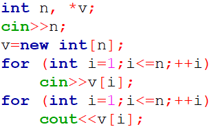
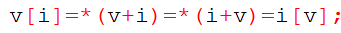
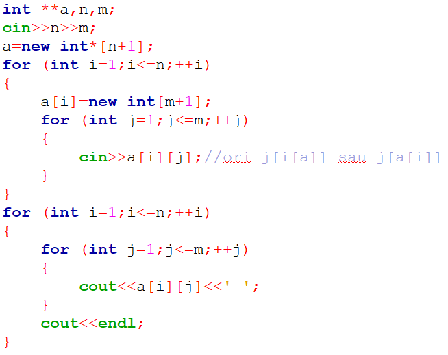
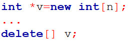
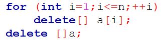

Tehnica alocării dinamice a memoriei se bazează pe utilizarea variabilelor dinamice. Acestea sunt create de programator prin operații explicite, li se alocă memorie în HEAP și sunt eliminate la finalul execuției programului sau explicit de către programator. Pentru a putea fi accesate, adresa lor trebui păstrată într-o variabilă de tip pointer. La rândul ei, aceasta poate fi statică sau dinamică.
Crearea variabilelor dinamice
-aceasta se face cu ajutorul operatorului new; putem aloca variabile simple sau tablouri
Crearea unui tablou alocat dinamic
-pentru a putea aloca o matrice, trebuie să ştim întâi cum se procedează pentru un tablou unidimensional (vector):
pentru a crea un tablou cu n elemente de un tip oarecare TIP, folosim operaţia new TIP[n]
acesta trebuie salvat într-o variabilă de tip pointer, pentru a putea folosi mai târziu tabloul
Exemplu în C++:
Totodată, folosind aritmetica pointerilor şi faptul că adunarea este o operaţie comutativă putem obţine:
Aşadar, ştiind că o matrice este extinderea la două dimensiuni a unui vector, un tablou bidimensional poate fi declarat prin alocare dinamică astfel:
Eliminarea variabilelor alocate dinamic
-acest lucru se realizează prin operaţia delete
-pentru a elimina un tablou unidimensional alocat dinamic folosim operația delete[] ADRESA, unde ADRESA este adresa primului element al tabloului
Aşadar, ştergerea unui tablou bidimensional alocat dinamic se realizează astfel:
